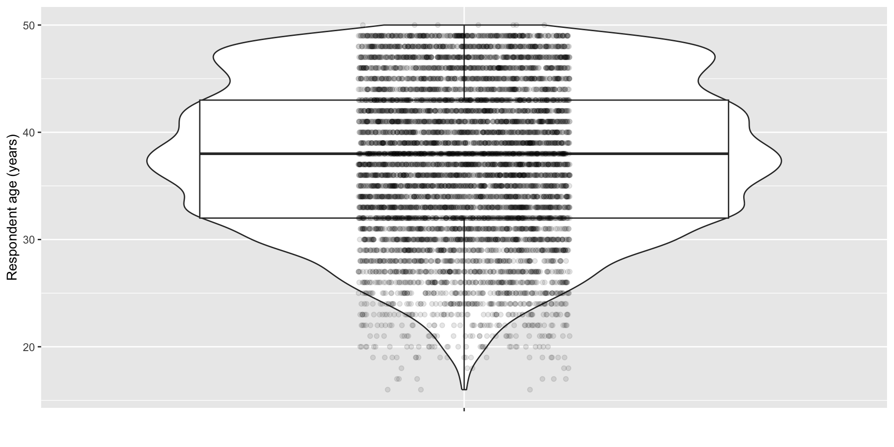

spc_tbl_ [8,247 × 111] (S3: spec_tbl_df/tbl_df/tbl/data.frame)
$ CaseID : num [1:8247] 96071 96072 96072 96072 96072 ...
$ PREGORDR : num [1:8247] 1 4 3 2 1 2 1 1 2 1 ...
$ FTFMODE : num [1:8247] 2 2 2 2 2 2 2 2 2 2 ...
$ BORNALIV : num [1:8247] 1 1 1 1 1 1 NA 1 1 1 ...
$ RECNT5YRPRG : num [1:8247] 1 5 5 5 5 1 1 5 5 5 ...
$ BABYSEX : num [1:8247] 1 2 2 1 1 1 NA 2 2 1 ...
$ BIRTHWGT : num [1:8247] 1 1 1 1 1 1 NA 2 1 1 ...
$ PAYBIRTH1 : num [1:8247] 1 NA NA NA NA 1 NA NA NA NA ...
$ PAYBIRTH2 : num [1:8247] NA NA NA NA NA NA NA NA NA NA ...
$ PAYBIRTH3 : num [1:8247] NA NA NA NA NA NA NA NA NA NA ...
$ AGEFATHER : num [1:8247] 5 3 2 2 1 2 2 5 5 3 ...
$ KNEWPREG : num [1:8247] 1 NA NA NA NA 1 1 NA NA NA ...
$ PRIORSMK : num [1:8247] 0 NA NA NA NA 4 4 NA NA NA ...
$ POSTSMKS : num [1:8247] 5 NA NA NA NA 1 5 NA NA NA ...
$ GETPRENA : num [1:8247] 1 NA NA NA NA 1 5 NA NA NA ...
$ BGNPRENA : num [1:8247] 1 NA NA NA NA 1 NA NA NA NA ...
$ KIDAGE : num [1:8247] 2 8 8 8 8 2 NA 6 6 8 ...
$ FRSTEATD : num [1:8247] 0 NA NA NA NA NA NA NA NA NA ...
$ RECPREG5YR : num [1:8247] 1 5 5 5 5 1 1 5 5 5 ...
$ RECPREG3YR : num [1:8247] 1 5 5 5 5 1 1 5 5 5 ...
$ EVUSEINT : num [1:8247] NA 1 1 1 5 NA NA 1 1 1 ...
$ STOPDUSE : num [1:8247] NA 1 1 1 NA NA NA 1 1 1 ...
$ WHYSTOPD : num [1:8247] NA 5 5 5 NA NA NA 5 1 1 ...
$ WHATMETH1 : num [1:8247] NA NA NA NA NA NA NA NA NA NA ...
$ WHATMETH2 : num [1:8247] NA NA NA NA NA NA NA NA NA NA ...
$ WHATMETH3 : num [1:8247] NA NA NA NA NA NA NA NA NA NA ...
$ WHATMETH4 : num [1:8247] NA NA NA NA NA NA NA NA NA NA ...
$ RESNOUSE : num [1:8247] 1 NA NA NA 5 1 1 NA NA NA ...
$ WANTBOLD : num [1:8247] NA 5 5 5 5 NA NA 1 NA NA ...
$ PROBBABE : num [1:8247] NA NA NA NA NA NA NA NA NA NA ...
$ TIMINGOK : num [1:8247] 3 NA NA NA NA 2 2 2 2 2 ...
$ TOOSOON_N : num [1:8247] NA NA NA NA NA NA NA NA NA NA ...
$ TOOSOON_P : num [1:8247] NA NA NA NA NA NA NA NA NA NA ...
$ LATERNUM : num [1:8247] 2 NA NA NA NA NA NA NA NA NA ...
$ LATERMY : num [1:8247] 2 NA NA NA NA NA NA NA NA NA ...
$ WTHPART1 : num [1:8247] 1 NA NA NA NA 1 NA NA NA NA ...
$ WTHPART2 : num [1:8247] NA NA NA NA NA NA NA NA NA NA ...
$ FEELINPG : num [1:8247] 10 NA NA NA NA 7 6 NA NA NA ...
$ HPWNOLD : num [1:8247] 1 5 5 5 5 1 1 6 1 1 ...
$ TIMOKHP : num [1:8247] 3 NA NA NA NA 2 2 NA 2 2 ...
$ COHPBEG : num [1:8247] NA 1 1 1 3 2 2 3 1 1 ...
$ COHPEND : num [1:8247] NA 1 1 1 3 2 2 3 1 1 ...
$ TELLFATH : num [1:8247] NA NA NA NA NA NA NA NA NA NA ...
$ WHENTELL : num [1:8247] NA NA NA NA NA NA NA NA NA NA ...
$ TRYSCALE : num [1:8247] 10 NA NA NA NA 10 5 NA NA NA ...
$ WANTSCAL : num [1:8247] 10 NA NA NA NA 10 5 NA NA NA ...
$ WHYPRG1 : num [1:8247] NA NA NA NA NA NA NA NA NA NA ...
$ WHYPRG2 : num [1:8247] NA NA NA NA NA NA NA NA NA NA ...
$ WHYNOUSE1 : num [1:8247] NA NA NA NA NA NA NA NA NA NA ...
$ WHYNOUSE2 : num [1:8247] NA NA NA NA NA NA NA NA NA NA ...
$ WHYNOUSE3 : num [1:8247] NA NA NA NA NA NA NA NA NA NA ...
$ WHYNOUSE4 : num [1:8247] NA NA NA NA NA NA NA NA NA NA ...
$ MAINOUSE : num [1:8247] NA NA NA NA NA NA NA NA NA NA ...
$ OUTCOME : num [1:8247] 1 1 1 1 1 1 4 1 1 1 ...
$ BIRTHORD : num [1:8247] 1 4 3 2 1 1 NA 1 2 1 ...
$ DATEND : num [1:8247] 2021 1999 1993 1991 1989 ...
$ agepreg : num [1:8247] 38 25 20 18 16 23 22 29 34 21 ...
$ GEST_LB : num [1:8247] 3 3 3 3 3 3 NA 3 3 3 ...
$ GEST_OTHR : num [1:8247] NA NA NA NA NA NA 1 NA NA NA ...
$ GestImp : num [1:8247] 2 2 2 2 2 2 2 2 2 2 ...
$ DATECON : num [1:8247] 2020 1998 1993 1991 1989 ...
$ agecon : num [1:8247] 37 25 19 17 15 22 22 28 33 20 ...
$ pmarpreg : num [1:8247] 2 2 2 2 1 1 1 1 2 2 ...
$ BFEEDWKS : num [1:8247] 3 NA NA NA NA 0 NA NA NA NA ...
$ RMAROUT3 : num [1:8247] 1 1 1 1 3 2 2 3 1 1 ...
$ RMARCON3 : num [1:8247] 1 1 1 1 3 2 2 3 1 1 ...
$ NEWWANTR : num [1:8247] 1 6 6 6 6 2 2 2 2 2 ...
$ wantresp : num [1:8247] 1 5 5 5 5 2 2 2 2 2 ...
$ WANTPART : num [1:8247] 1 5 5 5 5 2 2 6 2 2 ...
$ AGER : num [1:8247] 40 49 49 49 49 25 25 37 44 44 ...
$ AGESCRN : num [1:8247] 40 49 49 49 49 25 25 37 44 44 ...
$ FMARITAL : num [1:8247] 1 3 3 3 3 5 5 5 3 3 ...
$ RMARITAL : num [1:8247] 1 4 4 4 4 2 2 6 4 4 ...
$ HIEDUC : num [1:8247] 10 9 9 9 9 5 5 6 8 8 ...
$ HISPANIC : num [1:8247] 2 2 2 2 2 2 2 2 2 2 ...
$ HISPRACE2 : num [1:8247] 2 3 3 3 3 4 4 2 2 2 ...
$ BRNOUT : num [1:8247] 5 5 5 5 5 1 1 5 5 5 ...
$ PREGNUM : num [1:8247] 1 4 4 4 4 2 2 1 2 2 ...
$ PARITY : num [1:8247] 1 4 4 4 4 1 1 1 2 2 ...
$ CURR_INS : num [1:8247] 1 4 4 4 4 3 3 2 1 1 ...
$ POVERTY : num [1:8247] 417 444 444 444 444 97 97 140 444 444 ...
$ LABORFOR : num [1:8247] 1 6 6 6 6 6 6 4 1 1 ...
$ RELIGION : num [1:8247] 1 1 1 1 1 1 1 3 3 3 ...
$ METRO : num [1:8247] 2 1 1 1 1 3 3 3 1 1 ...
$ OUTCOME_I : num [1:8247] 0 0 0 0 0 0 0 0 0 0 ...
$ DATEND_I : num [1:8247] 0 0 0 0 0 0 0 0 0 0 ...
$ PRGLNGTH_I : num [1:8247] 0 0 0 0 0 0 0 0 0 0 ...
$ DATECON_I : num [1:8247] 0 0 0 0 0 0 0 0 0 0 ...
$ BFEEDWKS_I : num [1:8247] 0 0 0 0 0 0 0 0 0 0 ...
$ RMAROUT3_I : num [1:8247] 0 0 0 0 0 0 0 0 0 0 ...
$ RMARCON3_I : num [1:8247] 0 0 0 0 0 0 0 0 0 0 ...
$ NEWWANTR_I : num [1:8247] 0 0 0 0 0 0 0 0 0 0 ...
$ WANTPART_I : num [1:8247] 0 0 0 0 0 0 0 0 0 0 ...
$ HIEDUC_I : num [1:8247] 0 0 0 0 0 0 0 0 0 0 ...
$ HISPANIC_I : num [1:8247] 0 0 0 0 0 0 0 0 0 0 ...
$ HISPRACE2_I : num [1:8247] 0 0 0 0 0 0 0 0 0 0 ...
$ PREGNUM_I : num [1:8247] 0 0 0 0 0 0 0 0 0 0 ...
$ CURR_INS_I : num [1:8247] 0 0 0 0 0 0 0 0 0 0 ...
$ POVERTY_I : num [1:8247] 0 0 0 0 0 0 0 0 0 0 ...
[list output truncated]
- attr(*, "spec")=
.. cols(
.. CaseID = col_double(),
.. PREGORDR = col_double(),
.. FTFMODE = col_double(),
.. BORNALIV = col_double(),
.. RECNT5YRPRG = col_double(),
.. BABYSEX = col_double(),
.. BIRTHWGT = col_double(),
.. PAYBIRTH1 = col_double(),
.. PAYBIRTH2 = col_double(),
.. PAYBIRTH3 = col_double(),
.. AGEFATHER = col_double(),
.. KNEWPREG = col_double(),
.. PRIORSMK = col_double(),
.. POSTSMKS = col_double(),
.. GETPRENA = col_double(),
.. BGNPRENA = col_double(),
.. KIDAGE = col_double(),
.. FRSTEATD = col_double(),
.. RECPREG5YR = col_double(),
.. RECPREG3YR = col_double(),
.. EVUSEINT = col_double(),
.. STOPDUSE = col_double(),
.. WHYSTOPD = col_double(),
.. WHATMETH1 = col_double(),
.. WHATMETH2 = col_double(),
.. WHATMETH3 = col_double(),
.. WHATMETH4 = col_double(),
.. RESNOUSE = col_double(),
.. WANTBOLD = col_double(),
.. PROBBABE = col_double(),
.. TIMINGOK = col_double(),
.. TOOSOON_N = col_double(),
.. TOOSOON_P = col_double(),
.. LATERNUM = col_double(),
.. LATERMY = col_double(),
.. WTHPART1 = col_double(),
.. WTHPART2 = col_double(),
.. FEELINPG = col_double(),
.. HPWNOLD = col_double(),
.. TIMOKHP = col_double(),
.. COHPBEG = col_double(),
.. COHPEND = col_double(),
.. TELLFATH = col_double(),
.. WHENTELL = col_double(),
.. TRYSCALE = col_double(),
.. WANTSCAL = col_double(),
.. WHYPRG1 = col_double(),
.. WHYPRG2 = col_double(),
.. WHYNOUSE1 = col_double(),
.. WHYNOUSE2 = col_double(),
.. WHYNOUSE3 = col_double(),
.. WHYNOUSE4 = col_double(),
.. MAINOUSE = col_double(),
.. OUTCOME = col_double(),
.. BIRTHORD = col_double(),
.. DATEND = col_double(),
.. agepreg = col_double(),
.. GEST_LB = col_double(),
.. GEST_OTHR = col_double(),
.. GestImp = col_double(),
.. DATECON = col_double(),
.. agecon = col_double(),
.. pmarpreg = col_double(),
.. BFEEDWKS = col_double(),
.. RMAROUT3 = col_double(),
.. RMARCON3 = col_double(),
.. NEWWANTR = col_double(),
.. wantresp = col_double(),
.. WANTPART = col_double(),
.. AGER = col_double(),
.. AGESCRN = col_double(),
.. FMARITAL = col_double(),
.. RMARITAL = col_double(),
.. HIEDUC = col_double(),
.. HISPANIC = col_double(),
.. HISPRACE2 = col_double(),
.. BRNOUT = col_double(),
.. PREGNUM = col_double(),
.. PARITY = col_double(),
.. CURR_INS = col_double(),
.. POVERTY = col_double(),
.. LABORFOR = col_double(),
.. RELIGION = col_double(),
.. METRO = col_double(),
.. OUTCOME_I = col_double(),
.. DATEND_I = col_double(),
.. PRGLNGTH_I = col_double(),
.. DATECON_I = col_double(),
.. BFEEDWKS_I = col_double(),
.. RMAROUT3_I = col_double(),
.. RMARCON3_I = col_double(),
.. NEWWANTR_I = col_double(),
.. WANTPART_I = col_double(),
.. HIEDUC_I = col_double(),
.. HISPANIC_I = col_double(),
.. HISPRACE2_I = col_double(),
.. PREGNUM_I = col_double(),
.. CURR_INS_I = col_double(),
.. POVERTY_I = col_double(),
.. LABORFOR_I = col_double(),
.. RELIGION_I = col_double(),
.. WGT2022_2023 = col_double(),
.. VEST = col_double(),
.. VECL = col_double(),
.. CMINTVW = col_double(),
.. CMLSTYR = col_double(),
.. CMJAN3YR = col_double(),
.. CMJAN4YR = col_double(),
.. CMJAN5YR = col_double(),
.. YEAR = col_double(),
.. QUARTER = col_double()
.. )
- attr(*, "problems")=<externalptr> More on ggplot
2025-04-01
Rick Gilmore
Overview
Announcements
- Exercise 06 due Thursday, April 3.
- Final project presentation survey
DataCamp

Last time
Today’s topics
- A future of data science
- Optimism and data visualization
- More
ggplot2 - Work session
A future of data science
Downey (2024)
Your turn
- Is Downey right?
Optimism and data visualization
Hans Rosling
Rosling (n.d.)
Gilmore’s view
- Things are much better than they seem
- Especially if we look at the data
- We need more data, more widely & publicly available
- Plus skilled interpreters (YOU!)
- Knowledge and skepticism (+ action) are antidotes to pessimism

More ggplot2

“National Survey of Family Growth” (2024)
Gathering data
- Visit https://www.cdc.gov/nchs/nsfg/nsfg-2022-2023-puf.htm
- Download data (https://ftp.cdc.gov/pub/Health_Statistics/NCHS/NSFG/NSFG-2022-2023-FemPregPUFData.zip), unzip
- Copy to computer
- Data:
src/include/csv - Codebook:
src/include/pdf
- Data:
Importing data
Examining data
Help from the codebook
Respondent age (AGER)
Respondent age (AGER)
Respondent age (AGER)

Respondent age (AGER): Violin
Respondent age (AGER): Violin
Figure 2: Error message when I tried to execute this code.
Need help?
Respondent age (AGER): Violin
Respondent age (AGER): Violin
Respondent age (AGER): Violin

Respondent age (AGER): Boxplot
Respondent age (AGER): Boxplot
Respondent age (AGER): Boxplot
Respondent age (AGER): Composite
Respondent age (AGER): Composite
Respondent age (AGER): Composite
Respondent age (AGER): Composite
Respondent age (AGER): Composite
Respondent age (AGER): Composite

Respondent age (AGER): Composite
Respondent age (AGER): Composite
Respondent age (AGER): Composite

Respondent age (AGER): Composite
Respondent age (AGER): Composite
Respondent age (AGER): Composite

Respondent age (AGER): Composite
nsfg_22_23 |>
ggplot() +
aes(x = "", y = AGER) +
geom_boxplot() +
geom_violin() +
geom_jitter(width = .15, height = 0, alpha=.1)- Boxplot first, then violin
Respondent age (AGER): Composite
Respondent age (AGER): Composite

Order matters!
When adding multiple layers of geoms, think about what order makes the most sense.
Here, the best order is violin, then boxplot, then points.
Iterative enhancement
Iterative enhancement
Iterative enhancement

New twist!
New twist!
New twist!
What do the numbers mean?
- Back to the codebook
Figure 12: RELIGION code from NSFG codebook
New twist!
library(dplyr)
nsfg_22_23 |>
mutate(religion = case_match(RELIGION,
1 ~ "none",
2 ~ "catholic",
3 ~ "protestant",
4 ~ "other")) |>
ggplot() +
aes(x = "", y = AGER) +
geom_violin() +
geom_boxplot() +
#geom_jitter(width = .15, height = 0, alpha=.1) +
ylab("Respondent age (years)") +
xlab("") +
facet_wrap(~religion)- Give numbers meaningful labels with
dplyr::mutate()anddplyr::case_match().
New twist!
library(dplyr)
nsfg_22_23 |>
mutate(religion = case_match(RELIGION,
1 ~ "none",
2 ~ "catholic",
3 ~ "protestant",
4 ~ "other")) |>
ggplot() +
aes(x = "", y = AGER) +
geom_violin() +
geom_boxplot() +
#geom_jitter(width = .15, height = 0, alpha=.1) +
ylab("Respondent age (years)") +
xlab("") +
facet_wrap(~religion)New twist!

Recommended design principles
- Work iteratively (in small steps)
- Keep prior versions
- Store figure code in
*.Ror*.qmdfiles
- Store figure code in
- No ‘secret sauce’
- The process is the product
Next time…
Python logo
Work session
Resources
References
Downey, A. (2024). A future of data science. Retrieved March 31, 2025, from https://www.youtube.com/watch?v=YKMZIzYBgTk&list=PL9HYL-VRX0oSFkdF4fJeY63eGDvgofcbn
National Survey of Family Growth. (2024, December 10). Retrieved March 31, 2025, from https://www.cdc.gov/nchs/nsfg/index.htm
Rosling, H. (n.d.). Hans rosling’s 200 countries, 200 years, 4 minutes - the joy of stats - BBC. Retrieved from https://www.youtube.com/watch?v=jbkSRLYSojo&t=80s